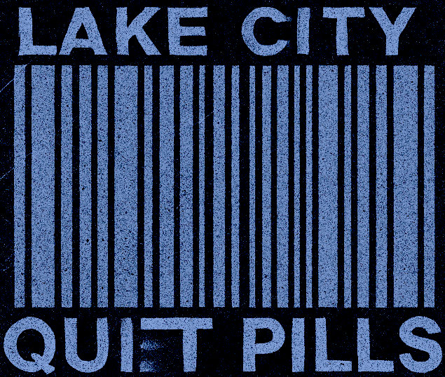
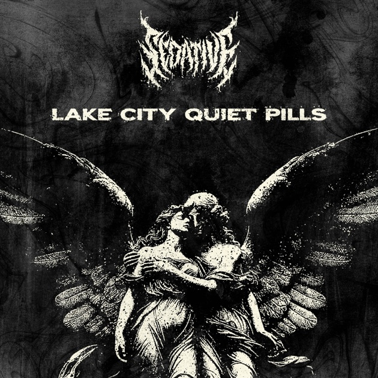
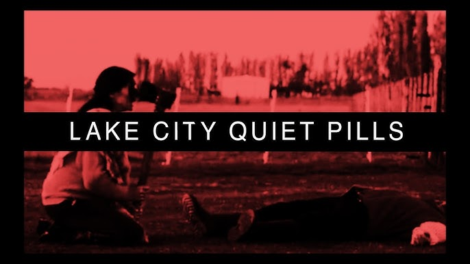

Lake City Quiet Pills
Global / Digital — Active ~2011

The Event
The mystery began with the death of a Reddit user named ReligionOfPeace. Investigators discovered hidden messages in the HTML source code of the user's website, Lake City Quiet Pills, which contained encrypted job postings and calendar events for high-level "private security" operations.


Current Theories
The Archive explores the reality of decentralized mercenary networks.
- Shadow Mercenaries The site was a genuine front for a group of international hitmen or mercenaries, using the internet's darkest corners to coordinate operations.
- Elaborate ARG The entire scenario was an early, highly sophisticated Alternate Reality Game (ARG) designed to test the investigative skills of the online community.